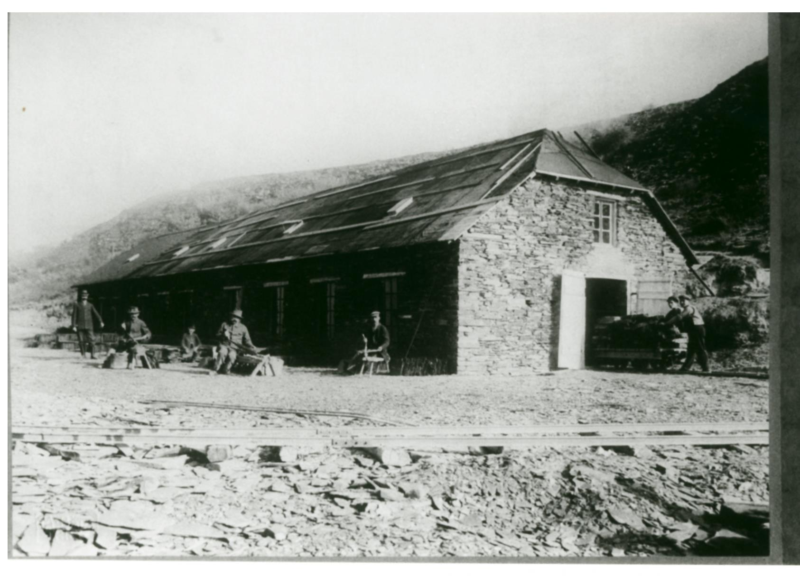

<div data-role="page" id="betonsteinwerk">
    <div data-role="header">
        <h1>Grubenwanderweg: Betonsteinwerk</h1>
    </div>

    <div role="main" class="ui-content">
        Hier ein Bild von 1950:
        
    </div>

    <div data-role="footer">
        <p><a href="#main" data-direction="reverse" class="ui-btn ui-shadow ui-corner-all ui-btn-b">Inhaltsverzeichnis</a></p>
    </div>
</div>